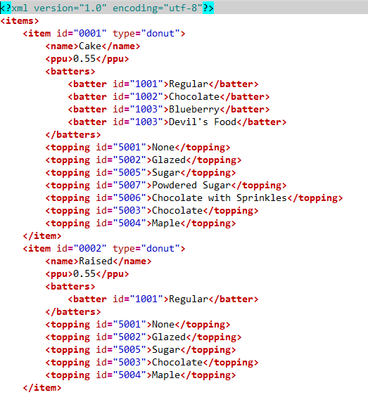

Historia
XML es el descendiente de un lenguaje de marcas que tuvo su origen en los años 70, llamado GML (General Markup Language), que se necesitaba para almacenar grandes cantidades de información por parte de IBM. De GML también procede otro lenguaje llamado SGML (Standard General Markup Language) , que se encargaba de estandarizar el GML.
Más tarde apareció un lenguaje a manos de un usuario de internet. Este era el HTML (Hypertext Markup Language), que se utilizaba para la web. HTML vio una rápida popularización. Una organización llamada W3C trató de establecer estándares y normas para HTML, pero este lenguaje de marcas todavía presentaba algunos inconvenientes.
Por ello, W3C comenzó el desarrollo de XML (Extensible Markup Language). En este lenguaje están trabajando expertos. Su objetivo es el de solucionar problemas de HTML al tratar la información. Algunos de estos problemas que HTML presentaba eran, por ejemplo, el contenido siendo mezclado con los estilos que se quieren aplicar; no permite compartir información con todos los dispositivos, como portátiles y móviles; la presentación en pantalla depende del visor que se utilice.
XML propuso soluciones como mezclar elementos de diferentes lenguajes (es decir, que sean extensibles), crear analizadores simples, remarcar que el documento no tenga errores de sintaxis, y dejar de lado características de SGML que permitían facilitar la escritura manual del documento y sustituirlas por metodologías que permitan a los programas automáticos interpretar lo que se incluye en el documento.
Normas y sintaxis
Las normas de uso y sintaxis para que un documento XML se considere bien formado son:
- Todos los elementos XML deben tener una etiqueta de cierre. No se puede omitir dicha etiqueta.
- Las etiquetas de apertura y las de cierre son sensibles a minúsculas y también a mayúsculas. Las etiquetas
y son diferentes entre sí. - La anidación de los elementos XML debe ser correcta.
- Debe haber un elemento raíz para todos los documentos XML. El elemento raíz es aquel que contiene todos los otros elementos, que pueden contener otros elementos hijos (los elementos hijo deben estar correctamente anidados).
- Los valores de los atributos siempre deben ir entre comillas ( “ ).
- Los caracteres que se permiten usar para los elementos son las letras minúsculas, mayúsculas, números, puntos y guiones bajos y medios.
- También está permitido el uso de los dos puntos ( : ), pero su uso está reservado para la definición de los espacios de nombres.
- El primer carácter es obligatorio que sea una letra o un guión bajo.
- Las letras no inglesas se permiten pero no es recomendable usarlas, ya que podrían generar errores.
A continuación un ejemplo de un documento XML:
Aplicaciones del XML en el ámbito empresarial
El XML (Extensible Markup Language) es un lenguaje de marcado ampliamente utilizado en el ámbito empresarial para intercambiar información electrónica entre aplicaciones y sistemas. Algunos de los usos más comunes de XML en el ámbito empresarial incluyen:
- Intercambio de datos: XML se utiliza para intercambiar datos entre diferentes aplicaciones y sistemas, permitiendo la integración de sistemas y la automatización de procesos.
- Documentación electrónica: XML se utiliza para almacenar y transmitir documentos electrónicos, como facturas, órdenes de compra, etc.
- Comercio electrónico: XML se utiliza para intercambiar información entre tiendas en línea y sistemas de pago, así como para la integración de diferentes aplicaciones de comercio electrónico.
- Búsqueda y recuperación de información: XML permite la indexación y la recuperación de información en grandes volúmenes de datos, lo que resulta útil en el contexto de la gestión de documentos y la recuperación de información.
- Descripción de productos: XML se utiliza para describir productos y servicios, lo que facilita la comparación y la selección de proveedores y productos.
En resumen, el XML es una tecnología muy versátil y ampliamente utilizada en el ámbito empresarial, que permite la integración de sistemas y la automatización de procesos, lo que a su vez mejora la eficiencia y reduce los costos.